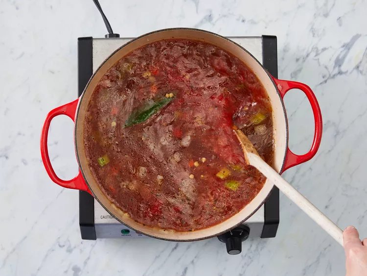

Hearty lentil soup, chock full of veggies and very yummy. Serve with warm cornbread.
Prep time: 15mins Cook time: 1hr 20mins Servings: 8
Step 1
Heat oil in a large soup pot over medium heat. Add onions, carrots, and celery; cook and stir until onion is tender, 3 to 5 minutes.
Step 2
Stir in garlic, bay leaf, oregano, and basil; cook for 2 minutes.
Step 3
Stir in lentils, and add water and tomatoes. Bring to a boil. Reduce heat and let simmer until lentils are tender, at least 1 hour.
Step 4
When ready to serve, stir in spinach and cook until it wilts.
Step 5
Stir in vinegar and season with salt and pepper; taste and adjust as needed.

Step 6
Serve hot and enjoy!

Follow my step by step youtube video!
Click hereRate and Review contact me